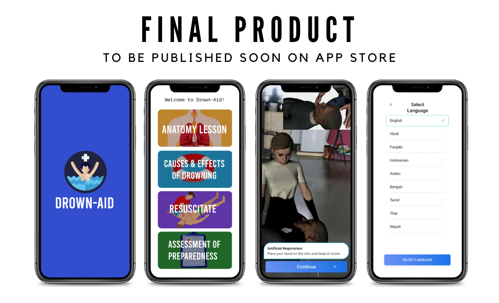
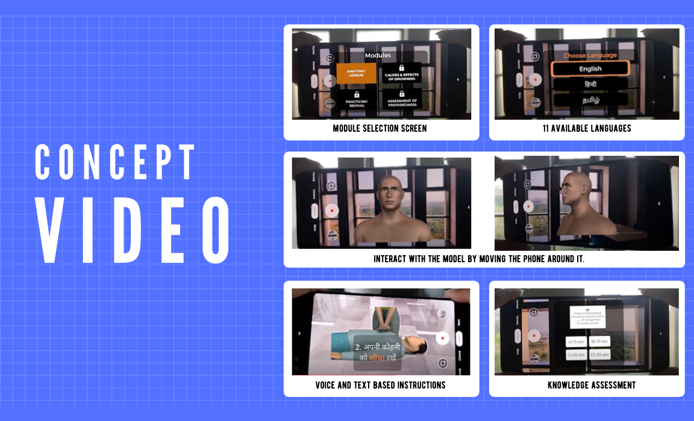
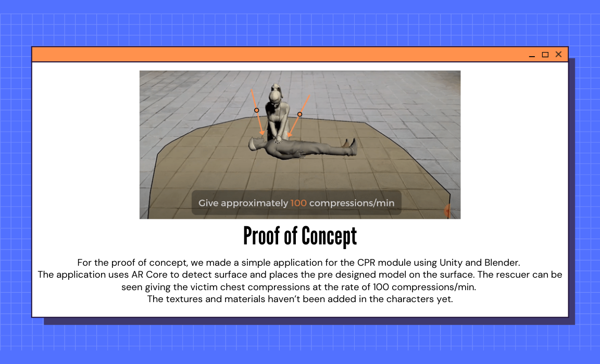
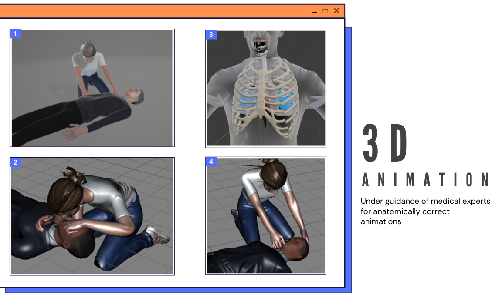

Drown-Aid [For the World Health Organization]
[Unity] [ARCORE] [bLENDER]
Worked with World Health Organization to develop a Multimedia training module for the revival of near-drowning victims delivered through a mobile AR system Introduction
A large number of lives can be saved if the proper aid is available by first responders at the site —whether a road crash, a fall or a near drowning. This is only possible if the first responders —taxi and auto drivers, common bystanders, teachers, students, others— are well informed, skilled and confident to render the necessary aid to the victim. Road crashes and drowning are some of the leading yet preventable causes for deaths worldwide. The number of non-fatal incidents, also termed as near drowning, are much higher in numbers. First responders who are well versed in revival techniques are crucial to save such lives and prevent deaths. With proper training, first responders can help prevent long-term complications or eventual death of a near drowning victim.
Initial Flow
Augmented Reality application to train people about Reviving a Near Drowning Person has four main modules:
- Module 1: Understanding the Human Body and Systems
- Module 2: Causes and Effects of Near Drowning
- Module 3: Reviving the person
- Module 4: Assessment of preparedness
Proof of Concept
With the guidelines for the basic application flow already set, we first make the low fidelity and mid fidelity prototype to gauge what needs to be worked on.
Major features:
- AR based revival training
- Testing of knowledge of user after each module
- Voice and text based instruction
- Available in 11 major South Asia languages
The initial prototype just concentrated on the flow of the application without paying much heed to the content of the application. In order to show our progress and understanding of the product to the client, we made a concept video. The video consisted of an anatomy model depiction and basic CPR technique.
 Expert's Review
The application we showed them was had all the modules in a linear fashion and it was missing some key points like:
- Resuscitation module was not conveying information properly needs to cover all scenarios and needs to be divided into Recovery Position, Artificial Respiration, Pulse check, Chest Compressions and Resuscitate
- Anatomy and Causes & Effects module had usage of jargon which could confuse a layman.
- Addition of visual based quiz in the Assessment of preparedness module.
Prefinal Mid-fi Prototype
Changes suggested by the experts were implemented and another iteration of the mid-fi prototype were made which finally got approved by them.
Animations were made with uttermost accuracy using Blender in order to ensure proper information is conveyed as accuracy and precision is of the essence in this project.